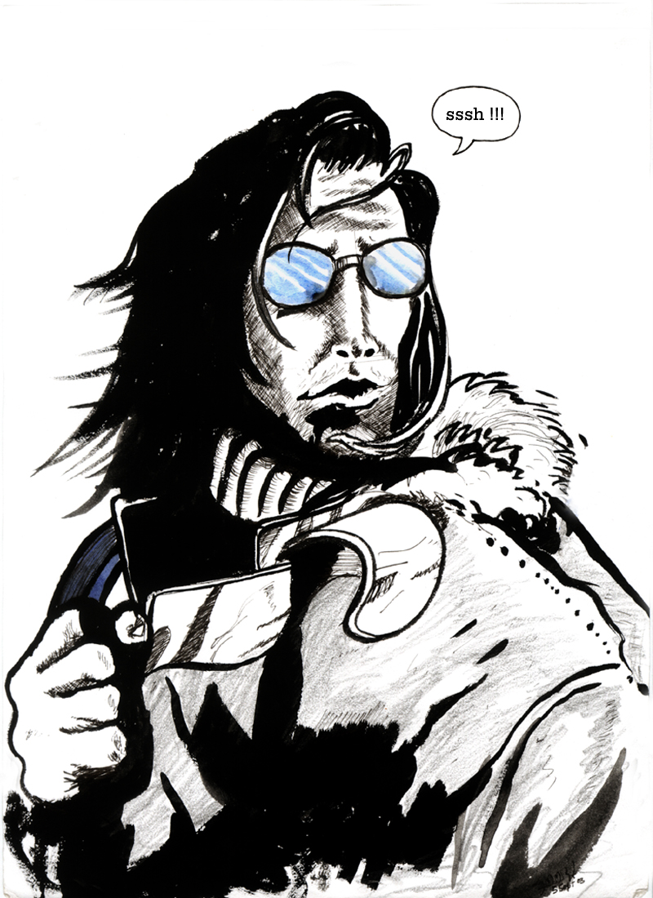
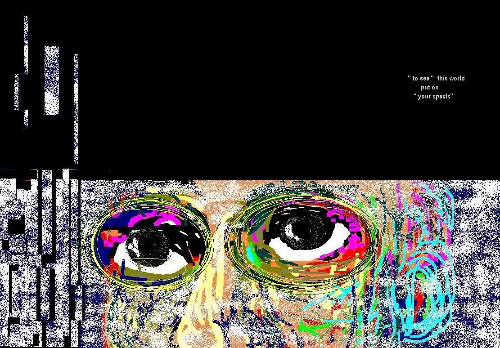
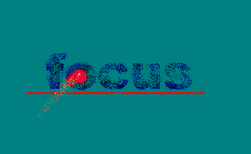
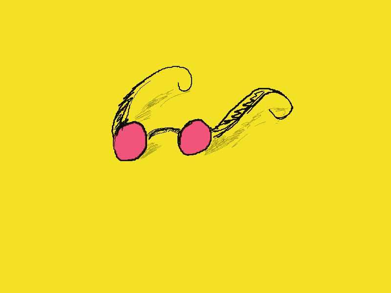

Home page
What's New
FAQs
Projects
Weblog
Recognition
Credits
Resume
Email me

| Art Work |
|
For Liips (around 2001 )
Most of the works here are shown which were done when we were doing the Letter of IIPS - Liips. The imagination compelled us to create a mascot. (somewhat clumsy , somewhat adolscent) who was about to ind his identity after his education years were over.
I had done a few caricatures for different moods. (they were only used in the print editions and not in the web editions.)
(All the above images are brush work with Camel Water colour and
then scanned to make a digital copy.
This was all way back in Year 2000-2001 Today I have my digitel iPen
and am trying
to get a hold on its pressure sensitive tip to get desired results..
Not very successful .. but .. I aint quitting..
accident , editorial1, editorial2 , pandit ,
Pranav and myself also made a few Logos for Liips. (Unfortunately they are lying idle in my virus infected hardisks Once I get time to clean up the virus scum I will be putting them on too). At that time I really loved the typography work.
Here and there
Just freaking around with the images ..

Ssssshhhh

mine



Pink glasses
{kind=link}
{kind=link}
{kind=link}
{kind=link}
{kind=link}
{kind=link}
{kind=link}
{kind=link}